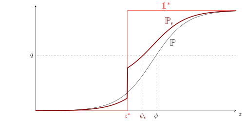
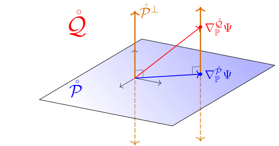
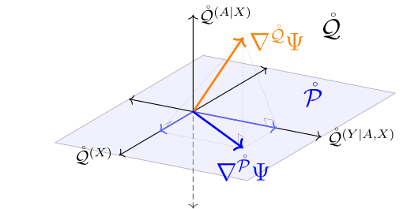

4 Deriving Canonical Gradients
In the previous chapter we discovered that every pathwise-differentiable estimand has at least one RAL estimator and that any asymptotically optimal RAL estimator has an influence function equal to the canonical gradient (the efficient influence function; EIF). In the next part of the book we’ll tackle the problem of constructing estimators that have this property, but, in order to do that we need to know what the canonical gradient is for any estimand and model of interest. In this chapter we’ll therefore learn techniques to derive the canonical gradient.
There are many methods to derive canonical gradients that are more or less natural to depending on the kind of model and estimand. In this book we’ll first focus on point mass contamination: a simple technique that works well in locally nonparametric models. In the process of illustrating this technique we’ll cover some handy rules that make it easier to build canonical gradients up out of simpler blocks. Then we will discuss projection methods which are often useful when the model is restricted in some way and in particular for models where some factors of the joint distribution are known.
4.1 Point Mass Contamination
Point mass contamination (also referred to as the “Gateaux derivative” or “Hampel influence function” approach) is a easy-to-use strategy for deriving the gradient in nonparametric models (recall there is only one gradient in a nonparametric model). Nonparametric models are a good starting point becasue often we don’t know anything useful about the data-generating distribution. Even if we do, nonparametric models are a reasonable fallback because we can still produce a good RAL estimator using the nonparametric EIF - it will just be less efficient than the efficient estimator under the restricted model that exploits our prior knowledge. We will also see in a few sections that knowing the nonparametric canonical gradient is useful when deriving the canonical gradient in restricted models.
The idea of point mass contamination is to find paths in directions that make it easy to compute the value of the gradient at a given point \(z\). We’ll see that it suffices to take convex paths in the direction of distribution that is a point mass at a point \(z\).
4.1.1 Discrete Distributions
Presume for a moment that we’re working in a model where every variable is discrete but otherwise unspecified. When this is the case, the model is actually parametric because any joint distribution is a categorical distribution over a finite number of support points. Another way of putting this is that in a dataset drawn from such a distribution, there are only a finite number of possible “rows” that can appear. The probability distribution assigns a probability \({\mathbb{P}}\{Z=z_j\} = {\mathbb{P}}_j\) to each unique row \(z_j\) in a discrete set \(\mathcal Z\): the probabilities \(p_j\) for \(j \in \{1\dots J\}\) are the only parameters.
Let’s say we’re at a point \(p\) (representing either the mass function or the vector of probabilities, they are essentially the same). We can construct a convex path in the parameter space with \(p\) as the starting point and as the endpoint the mass function \(1^* = 1(z=z^*)\) (with distribution \(\mathbb 1^*\)) that puts all the probability mass at some point \(z^* \in \{z_1 \dots z_J\}\). For small values of \(\epsilon\), the convex path
\[ \begin{aligned} p_\epsilon &= (1-\epsilon)p + \epsilon 1^* \\ &= p + \epsilon(1^*- p) \end{aligned} \]
represents the distribution \(p\) “contaminated” with a little bit of extra mass at the point \(z^*\). Clearly all elements of the path are within the model. Moreover, this path is differentiable. Assuming none of the components of \(p\) (as a vector) are zero, the score for such a path (see Example 2.5) is
\[ s^* = \left(\frac{1^*}{p} - 1 \right) . \]
Consider now the inner product \({\mathbb{P}}_\theta s^* \nabla\!\Psi\) where \(\nabla\!\Psi\) is taken to be the (unknown) gradient at \({\mathbb{P}}\). Since the distributions in question are discrete, the expected value of any function \(f\) is \({\mathbb{P}}f = \sum_{z \in \mathcal Z} f(z) p(z)\). Thus,
\[ \begin{aligned} {\mathbb{P}}s^* \nabla\!\Psi &= {\mathbb{P}}\frac{1^*}{p} \nabla\!\Psi - \underbrace{{\mathbb{P}}\nabla\!\Psi}_0 \\ &= \sum_z \frac{1^*(z)}{p(z)} \nabla\!\Psi(z) p(z) \\ &= \nabla\!\Psi(z^*). \end{aligned} \]
For intuition, recall that one way to think of a function is as a very long “vector” \(\nabla\!\Psi = [\dots \nabla\!\Psi(0.1), \dots \nabla\!\Psi(3.4) \dots]\) where the elements correspond to different possible values of the argument (see Section B.1). The scores above look like \(1(z=z^*)\) so when we take an inner product of such a score with an arbitrary function, we essentially pick out the element of that function corresponding to position \(z^*\). In other words, the directions corresponding to point masses at each \(z^*\) are like the “axes” of the space and we get the value of our unknown function at each point by projecting onto those axes.
Knowing that \({\mathbb{P}}s^* \nabla\!\Psi = \nabla\!\Psi(z^*)\) isn’t immediately helpful because we still have the unknown gradient on both sides of the equation. But by the central identity of influence functions we can now replace the inner product with the pathwise derivative \(\dot\Psi(s^*) = {\mathbb{P}}s^* \nabla\!\Psi = \nabla\!\Psi(z^*)\).
Read right-to-left, this gives us a way of deriving the gradient \(\nabla\!\Psi\), which we don’t know. All we need to do to obtain the values of \(\nabla\!\Psi\) at each point \(z^*\) is compute the pathwise derivative along convex paths in the direction of each point mass \(1^*\). Specifically, we must evaluate
\[ \dot\Psi(s^*) = {\left. \frac{\mathop{}\!\mathrm{d}}{\mathop{}\!\mathrm{d}\epsilon} \right|_{\epsilon=0}}\Psi\bigg({\mathbb{P}}+ \epsilon(\mathbb 1^* - {\mathbb{P}}) \bigg) . \]
Example 4.1 (Gradient of mean) Let \(Z\) be a one-dimensional discrete random variable with no other restrictions and let \(\Psi({\mathbb{P}}) = \mathbb{E}_{\mathbb{P}}[Z]\), the population mean. By the above,
\[ \begin{aligned} \nabla\!\Psi(z^*) &= {\left. \frac{\mathop{}\!\mathrm{d}}{\mathop{}\!\mathrm{d}\epsilon} \right|_{\epsilon=0}}\Psi\bigg({\mathbb{P}}+ \epsilon(\mathbb 1^* - {\mathbb{P}}) \bigg) \\ &= {\left. \frac{\mathop{}\!\mathrm{d}}{\mathop{}\!\mathrm{d}\epsilon} \right|_{\epsilon=0}}\sum_z z \bigg( p(z) + \epsilon(1^*(z)- p(z)) \bigg) \\ &= \sum_k z 1^*(z) - \sum_z z p(z) \\ &= z^* - \mathbb{E}_{{\mathbb{P}}}[Z] \end{aligned} \]
Therefore \(\nabla\!\Psi(z) = z - \mathbb{E}_{\mathbb{P}}[Z]\), which is the influence function for the sample mean and aligns with the equivalent result we proved in Example 3.5.
Keep in mind that the gradient \(\nabla\!\Psi\) depends on the data-generating distribution (and the model but here we have a fixed discrete model in mind), so really we should be writing \(\nabla\!_{\mathbb{P}}\Psi\). In Example 4.1 this is evident because the result depends on \(\mathbb{E}_{\mathbb{P}}[Z]\).
The manipulations in Example 4.1 are characteristic of gradient derivations with point mass contamination. The only challenge is keeping careful track of the point mass \(z^*\) vs generic values \(z\) and the action of the indicator functions. This is a purely mechanical exercise, no special intuition is requred. Just keep in mind that \(\sum_z f(z)\ 1^*(z) = f(z^*)\) because the indicator “picks out” the indicated term in the sum. Once you’ve done it once or twice it becomes straightforward.
Sometimes you also need to keep track of some other fixed point, as the next example shows.
Example 4.2 (Gradient of a density at a point) Let \(Z\) be a one-dimensional discrete random variable with no other restrictions and let \(\Psi({\mathbb{P}}) = {\mathbb{P}}\{ Z= \tilde z \}\) for a particular value \(\tilde z\).
An easy way to derive the canonical gradient is to let \(W = 1(Z= \tilde z)\) and use the result from Example 4.1 since \({\mathbb{P}}\{Z= \tilde z\} = \mathbb{E}_{\mathbb{P}}[W]\). This immediately gives \(\nabla\!\Psi(z) = 1_{\tilde z}(z) - p(\tilde z)\).
We arrive at the same result if we consider that \(\Psi({\mathbb{P}}) = p(\tilde z)\). For any \(\tilde z\),
\[ \begin{aligned} \nabla\!\Psi(z^*) &= {\left. \frac{\mathop{}\!\mathrm{d}}{\mathop{}\!\mathrm{d}\epsilon} \right|_{\epsilon=0}}\Psi\bigg({\mathbb{P}}+ \epsilon(\mathbb 1^* - {\mathbb{P}}) \bigg) \\ &= {\left. \frac{\mathop{}\!\mathrm{d}}{\mathop{}\!\mathrm{d}\epsilon} \right|_{\epsilon=0}}\bigg[\big(p + \epsilon( 1^* - p) \big)(\tilde z)\bigg] \\ &= 1^*(\tilde z) - p(\tilde z) . \end{aligned} \]
This is the same as above because \(1^*(\tilde z) = 1(z^* = \tilde z) = 1_{\tilde z}(z^*)\).
When \(Z\) is multidimensional the same process works but the notation can be more verbose. For example, if \(Z = (Y,X)\), then the \(Z\)-domain \(\mathcal Z = \{z_1, \dots z_J\}\) is some subset of the cartesian product \(\mathcal Y \times \mathcal X\) where these are the (discrete) domains of \(X\) and \(Y\). We’ll let \(z^* = (y^*, x^*)\) be the point at which mass is concentrated in the mass function \(1^*\) with corresponding distribution \(\mathbb 1^*\). In an abuse of notation we’ll also write, e.g., \(1^*(x) = 1(x=x^*)\). This single-variable indicator also picks out terms in a sum, i.e., \(\sum_{x,y} f(x,y) 1^*(x) = \sum_y f(x^*, y)\). We’ll see patterns like this a lot in gradient derivations using point mass contamination.
Example 4.3 (Gradient of a conditional mean) Let \((Y,X)\) be discrete random variables with no other restrictions and let \(\Psi({\mathbb{P}}) = \mathbb{E}_{\mathbb{P}}[Y|X=\tilde x]\), the conditional mean of \(Y\) at a value \(X=\tilde x\). Computing the pathwise derivative on a path from a distribution \(p\) towards a point mass at \((y^*, x^*)\) gives
\[ \begin{aligned} \nabla\!\Psi(y^*,x^*) &= {\left. \frac{\mathop{}\!\mathrm{d}}{\mathop{}\!\mathrm{d}\epsilon} \right|_{\epsilon=0}}\Psi\bigg( p + \epsilon(1^* - p) \bigg) \\ &= {\left. \frac{\mathop{}\!\mathrm{d}}{\mathop{}\!\mathrm{d}\epsilon} \right|_{\epsilon=0}}\sum_y y \bigg( p + \epsilon(1^*- p) \bigg)(y|\tilde x) \\ &= \sum_y y {\left. \frac{\mathop{}\!\mathrm{d}}{\mathop{}\!\mathrm{d}\epsilon} \right|_{\epsilon=0}}\bigg( p + \epsilon(1^*- p) \bigg)(y|\tilde x) \\ \end{aligned} \]
The densities can only be summed as joint densities so to compute the conditional density above we must do some algebra. Applying the identity \(p(y|x) = \frac{p(y,x)}{p(x)} = \frac{p(y,x)}{\sum_y p(y,x)}\),
\[ \begin{aligned} \bigg( p + \epsilon(1^*- p) \bigg)(y|\tilde x) &= \frac{\big( p + \epsilon(1^*- p) \big)(y,\tilde x)} { \sum_y \big( p + \epsilon(1^*- p) \big)(y, \tilde x)} \\ &= \frac{p(y, \tilde x) + \epsilon(1^*(y, \tilde x)- p(y, \tilde x))} { \sum_y p(y, \tilde x) + \sum_y \epsilon(1^*(y, \tilde x) - p(y, \tilde x))} \\ &= \frac{p(y, \tilde x) + \epsilon(1^*(y, \tilde x)- p(y, \tilde x))} { p(\tilde x) + \epsilon(1^*(\tilde x) - p(\tilde x))} . \end{aligned} \]
Now we plug this into to the display above and use \({\left. \frac{\mathop{}\!\mathrm{d}}{\mathop{}\!\mathrm{d}\epsilon} \right|_{\epsilon=0}}\frac{a + b\epsilon}{c + d\epsilon} = \frac{b}{c} - \frac{ad}{c^2}\) (by the chain and quotient rules) to obtain
\[ \begin{aligned} \nabla\!\Psi(y^*, x^*) &= \sum_y y {\left. \frac{\mathop{}\!\mathrm{d}}{\mathop{}\!\mathrm{d}\epsilon} \right|_{\epsilon=0}}\left( \frac{p(y, \tilde x) + \epsilon(1^*(y, \tilde x)- p(y, \tilde x))} { p(\tilde x) + \epsilon(1^*(\tilde x) - p(\tilde x))} \right)\\ &= \sum_y y \left(\frac{1^*(y, \tilde x)- p(y, \tilde x)}{p(\tilde x)} - \frac{(1^*(\tilde x) - p(\tilde x))p(y, \tilde x)}{p(\tilde x)^2} \right) \\ &= \frac{1}{p(\tilde x)} \sum_y y \bigg(1^*(y, \tilde x)- p(y, \tilde x) - (1^*(\tilde x) - p(\tilde x))p(y| \tilde x) \bigg) \\ &= \frac{1}{p(\tilde x)} \sum y {1^*(y,\tilde x) - 1^*(\tilde x)p(y|\tilde x)} \\ &= \frac{1^*(\tilde x)}{p(\tilde x)}\left(y^* - \mathbb{E}[Y|X=\tilde x] \right) \end{aligned} \]
Therefore \(\nabla\!\Psi(y,x) = \frac{1(x=\tilde x)}{p(\tilde x)}\left(y - \mathbb{E}[Y|X=\tilde x] \right)\). The conditional mean is generally not pathwise differentiable and thus doesn’t have an gradient (see Example 3.4), but in discrete data models it is!
As in the one-dimensional model, the difficulty in these calculations is keeping track of what is the fixed point \(\tilde x\), what is the location of the point mass \((y^* ,x^*)\), and what is a generic value \((y,x)\). Go slowly and deliberately at first and you will get the hang of it.
4.1.2 General Distributions
Point mass contamination is easiest to present for discrete models but it also works for general nonparametric models. However, it’s more difficult to understand in the general setting because “point masses” don’t exist for continuous random variables. Nonetheless, in much of the literature you’ll see point masses in continuous densities represented informally using Dirac delta functions. Hines et al. (2022) has many good examples.
The derivation with Dirac deltas can be made rigorous (see Ichimura and Newey (2022)), but, following the advice of Kennedy (2024), I find it much easier to simply pretend the model is discrete! Perhaps surprisingly, the form of the gradient in an unrestricted discrete model is generally also the form of the gradient in the nonparametric model. If you are worried, it is easy to check that the result holds by verifying the central identify for influence functions, since in a nonparametric model there is only one function (the gradient) for which it will hold.
Example 4.4 In Example 4.1 we showed that, in discrete data models, the gradient for the mean is \(\nabla\!\Psi(z) = z - \mathbb{E}_{\mathbb{P}}[Z]\). We now verify that this is also the gradient in the nonparametric model by checking that \(\dot\Psi_{\mathbb{P}}(s) = {\mathbb{P}}s \nabla\!\Psi\) for all \(s \in \mathcal{L}_2^0\left(\mathbb{P}\right)\).
In Example 3.5 we already derived that \(\dot\Psi_{\mathbb{P}}(s) = \mathbb{E}[Zs(Z)]\) for the mean. On the other hand,
\[ {\mathbb{P}}s\nabla\!\Psi = \mathbb{E}[s(Z)(Z - \mathbb{E}[Z])] = \mathbb{E}[s(Z)Z] - \mathbb{E}[Z] \underbrace{\mathbb{E}[s(Z)]}_0 , \]
which establishes the desired equality.
Of course, we already knew the gradient for the mean in the nonparametric model since we derived it in Example 3.5. But in that proof we had to magically know to add “zero” to the inner product in order to get a zero mean score. In practice, such tricks are not readily apparent. It’s much easier to have a candidate gradient and simply check that it works, as we just did in Example 4.4.
Some estimands, however, are pathwise differentiable in discrete models but not in nonparametric models. When this happens you will see a specific kind of failure when you check \(\dot\Psi_{\mathbb{P}}(s) = {\mathbb{P}}s \nabla\!\Psi\) for all \(s \in \mathcal{L}_2^0\left(\mathbb{P}\right)\).
Example 4.5 In Example 4.1 we showed that, in discrete data models, the gradient for the conditional mean of \(Y\) at a point \(X=\tilde x\) is \(\nabla\!\Psi(y,x) = \frac{1(x=\tilde x)}{p(\tilde x)}\left(y - \mathbb{E}[Y|X=\tilde x] \right)\). We now show that it is not the gradient in a nonparametric model. In fact, there is no gradient in a nonparametric model because this estimand is not pathwise differentiable in such models.
Assuming we did not know about the lack of pathwise differentiability, we might try to check \(\dot\Psi_{\mathbb{P}}(s) = {\mathbb{P}}s \nabla\!\Psi\). On the right-hand side, for any distribution where \(Y\) and \(X\) are continuously-distributed with density \(p(y,x)\)
\[ {\mathbb{P}}s\nabla\!\Psi = \int s(y,x)\frac{1(x=\tilde x)}{p(\tilde x)}\left(y - \mathbb{E}[Y|X=\tilde x] \right) p(y,x) \mathop{}\!\mathrm{d}(y,x) \]
which is always zero if \(1(x=\tilde x)\) is interpreted as a standard indicator function. This doesn’t make sense because it implies that the pathwise derivative is zero everywhere, meaning that the estimand is constant across the model, which it certainly isn’t.
Things make a little more sense if you interpret the indicator as a Dirac delta instead. In Hines et al. (2022), the equivalent derivation of the gradient using Dirac delta functions produces
\[ \nabla\!\Psi(y,x) = \frac{\infty(x=\tilde x)}{p(x)}\left(y - \mathbb{E}[Y|X=\tilde x] \right) \]
where \(\infty(x=\tilde x)\) is the Dirac delta that returns \(\infty\) at \(x=\tilde x\) and zero elsewhere and which magically picks values out of integrals, i.e., \(\int \infty(x=\tilde x) f(x) \mathop{}\!\mathrm{d}x = f(\tilde x)\).
However, we know that any gradient must be in \(\mathcal{L}_2^0\left(\mathbb{P}\right)\), i.e. it must be square-integrable. But this function is not:
\[ \begin{aligned} \| \nabla\!\Psi \|^2 &= \int \nabla\!\Psi(y,x)^2\ p(y,x) \mathop{}\!\mathrm{d}(y,x) \\ &= \int \frac{\infty(x=\tilde x)^2}{p(x)^2}\left(y - \mathbb{E}[Y|X=\tilde x] \right)^2 \ p(y,x)\mathop{}\!\mathrm{d}(y,x) \\ &= \int \infty(x=\tilde x) \frac{\infty(x=\tilde x)}{p(x)} {\left( \int \left(y - \mathbb{E}[Y|X=\tilde x] \right)^2 \ p(y|x)\mathop{}\!\mathrm{d}y \right)} \mathop{}\!\mathrm{d}x \\ &= \frac{\infty(\tilde x = \tilde x)}{p(\tilde x)} \mathbb{V}[Y|X=\tilde x] = \infty \\ \end{aligned} \]
The failures shown in Example 4.5 above are typical of what happens when you use point mass contamination to try and derive the gradient for an estimand that is not nonparametrically pathwise differentiable. If you end up with an indicator of a possibly continuous value in the gradient, it’s a good sign that the estimand is not nonparametrically pathwise differentiable.
Although appealing to a discrete data model usually does the trick, there are times when it doesn’t work. This can happen for estimands that are defined implicitly rather than explicitly in terms of expectations or probabilities. The point-mass contamination strategy is still useful, but we need a different approach to evaluate the pathwise derivative. I give an example here to demonstrate this, but it’s not vitally important to understand in detail.
Example 4.6 (Gradient of a quantile) Let \(\mathcal P\) be all continuous distributions \({\mathbb{P}}\) of a single variable \(Z\) and let the estimand \(\Psi({\mathbb{P}})\) be the \(q\)th quantile of \(Z\) under \({\mathbb{P}}\). Our aim is to find the canonical gradient of \(\Psi\) in this model.
Abusing notation a bit, let \({\mathbb{P}}(z)\) denote the CDF of \(Z\) under \({\mathbb{P}}\). The quantile \(\psi\) is defined by \({\mathbb{P}}(\psi) = q\) so we can write \(\Psi({\mathbb{P}}) = {\mathbb{P}}^{-1}(q)\) since the inverse of the CDF of a continuous random variable is well-defined, or
\[ \Psi({\mathbb{P}}) = \inf \{ z: {\mathbb{P}}(z) \ge q\} \]
for general distributions.
Along the convex path \({\mathbb{P}}^{(\epsilon)} = {\mathbb{P}}+ \epsilon(\mathbb 1^* - {\mathbb{P}})\), the CDF is
\[ [{\mathbb{P}}+ \epsilon(\mathbb 1^* - {\mathbb{P}})](z) = {\mathbb{P}}(z) + \epsilon(\mathbb 1^*(z) - {\mathbb{P}}(z)) \]
where \(\mathbb 1^*(z) = 1(z \ge z^*)\) is the CDF of a point mass at \(z^*\).
Technically this is not a legitimate path because \(\mathbb 1^* \not\in \mathcal P\) and in fact the path is not differentiable, but we can interpret it as the limit of a sequence of differentiable paths. Ichimura and Newey (2022) has the details but we don’t need to make a fully-rigorous argument: as with assuming a discrete model in other problems, using this path is just a tool to come up with a candidate gradient.

Let’s find an explicit expression for \(\psi_\epsilon= \Psi({\mathbb{P}}_\epsilon)\). We’ll break it down into two cases: \(z^* \le \psi\) and \(\psi < z^*\).
First, let’s put the point mass \(z^*\) to the left of the quantile \(\psi = \Psi({\mathbb{P}})\), as is shown in Figure 4.1. For any value \(z < z^*\) to the left of the point mass,
\[ {\mathbb{P}}^{(\epsilon)}(z) = {\mathbb{P}}(z)(1-\epsilon) \le {\mathbb{P}}(z) < {\mathbb{P}}(z^*) \le p(\psi) = q \]
Therefore the smallest value \(z\) for which \({\mathbb{P}}^{(\epsilon)}(z)\) is larger than \(q\) must be at or to the right of \(z^*\). In other words, the quantile at the perturbed distribution \(\psi_\epsilon\) is larger than or equal to the location of the point mass \(z^*\). This is also visible in Figure 4.1. Therefore
\[ \begin{aligned} \Psi({\mathbb{P}}_\epsilon) &= \inf \{ z: {\mathbb{P}}^{(\epsilon)}(z) \ge q \} \\ &= \inf \{ z: {\mathbb{P}}^{(\epsilon)}(z) \ge q, z^* \le z \} \\ &= \inf \{ z: (1-\epsilon){\mathbb{P}}(z) + \epsilon 1(z^* \le z) \ge q, z^* \le z \} \\ &= \inf \{ z: (1-\epsilon){\mathbb{P}}(z) + \epsilon\ge q, z^* \le z \} \\ &= \max\bigg\{ \inf \{ z: (1-\epsilon){\mathbb{P}}(z) + \epsilon\ge q\},\ z^* \bigg\}\\ &= \max\left\{ {\mathbb{P}}^{-1}\left(\frac{q-\epsilon}{1-\epsilon}\right),\ z^* \right\} \end{aligned} \]
The last equality follows because \({\mathbb{P}}\) is continuous by assumption so the infimum \(\ge q\) is attained at the above inverse.
Now we can take a pathwise derivative. By assumption \(z^* < \psi = {\mathbb{P}}^{-1}(q) = \lim_{\epsilon\to 0} {\mathbb{P}}^{-1}\left(\frac{q-\epsilon}{1-\epsilon}\right)\). Therefore when \(\epsilon\) is small enough, \(\Psi({\mathbb{P}}_\epsilon) = {\mathbb{P}}^{-1}\left(\frac{q-\epsilon}{1-\epsilon}\right)\) because this term is always larger than \(z^*\) in the maximum above. By the chain rule,
\[ {\left. \frac{\mathop{}\!\mathrm{d}}{\mathop{}\!\mathrm{d}\epsilon} \right|_{\epsilon=0}}\Psi({\mathbb{P}}^{(\epsilon)}) = \left( \left. \frac{\mathop{}\!\mathrm{d}{\mathbb{P}}^{-1}(z)}{\mathop{}\!\mathrm{d}z} \right|_{z=q} \right) \left( q - 1 \right) = \frac{q-1}{p(q)} \]
where \(p\) is the density of \({\mathbb{P}}\). You should convince yourself that \(\frac{\mathop{}\!\mathrm{d}{\mathbb{P}}^{-1}(z)}{\mathop{}\!\mathrm{d}z} = \frac{1}{p(z)}\).
Similar arguments to those above show that when the point mass is to the right of the quantile,
\[ \Psi({\mathbb{P}}_\epsilon) = \min\left\{ {\mathbb{P}}^{-1}\left(\frac{q}{1-\epsilon}\right),\ z^* \right\}, \]
and the pathwise derivative is
\[ {\left. \frac{\mathop{}\!\mathrm{d}}{\mathop{}\!\mathrm{d}\epsilon} \right|_{\epsilon=0}}\Psi({\mathbb{P}}^{(\epsilon)}) = \frac{q}{p(q)}. \]
Combining the two cases gives the gradient
\[ \nabla\!\Psi(z) = \frac{q - 1(z \le \psi)}{p(\psi)} \]
Let’s sum up everything we’ve learned about point mass contamination in one place:
4.2 Gradient Rules
Point mass contamination is a very useful strategy but the manual calculations required can quickly get out of hand for complex estimands. Even the algebra required to derive the gradient of the conditional mean in Example 4.3 was a bit excessive. You can have a look at Hines et al. (2022) and Kennedy (2024) to review examples that are even more involved. Thankfully, the algebra can usually be simplified with the application of a few easy derivative rules.
To make an analogy to calculus, you probably don’t remember how to derive the fact that the derivative of the log is the inverse function or that the derivative of sine is cosine, etc. Derivatives are tricky to compute from scratch! Nonetheless, you’re probably pretty comfortable computing the derivative of \(\sin(\log(x) + x^2)\) because you’ve memorized a few key primitive derivatives and you know how to use the chain, product, and sum rules. Deriving gradients is the same way: coming up with the primitives can be tricky, but once you have them it’s usually just a matter of combining them in the right way to get gradients for more complex estimands.
These rules look exactly the same as the usual rules for derivatives because they follow from them. A gradient is simply a way of encoding the “slope” of a function in multiple dimensions.
The gradient rules make it easy to derive gradients for complicated estimands, including those relevant in causal inference.
Example 4.7 (Gradient of the ATE in a nonparametric model) Let \(\Psi\) be the observable average treatment effect \(\Psi({\mathbb{P}}) = \mathbb{E}_{\mathbb{P}}[\mathbb{E}_{\mathbb{P}}[Y|A=1,X] - \mathbb{E}_{\mathbb{P}}[Y|A=0,X]]\). To derive the nonparametric gradient we’ll use a combination of gradient rules and point mass contamination. Abbreviate
\[ \mu(a,x) = \mathbb{E}_{\mathbb{P}}[Y|A=a,X=x] \]
Notice that in a discrete model we can write
\[ \Psi = \underbrace{\sum_x \mu(1,x) \ p(x)}_{\Psi_1} - \underbrace{\sum_x \mu(0,x)\ p(x)}_{\Psi_0} . \]
We can treat the values \(\mu(a,x)\) and \(p(x)\) for all \(a,x\) as their own estimands, and in fact we already know their gradients. Using the result from Example 4.3 giving the gradient for a conditional mean at a point,
\[ \nabla\![\mu(\tilde a, \tilde x)] (y,a,x) = \frac{1_{(\tilde a, \tilde x)}(a,x)}{p(\tilde a, \tilde x)} \big( y - \mu(\tilde a, \tilde x) \big). \]
And, using the result from Example 4.2,
\[ \nabla\ = 1_{\tilde{x}}(x) - p(\tilde x). \]
Now we combine these results using the product rule:
\[ \begin{aligned} \nabla\!\Psi_{\tilde a} &= \nabla\!\left[ \sum_{\tilde{x}} \mu(\tilde a, \tilde x) \ p(\tilde x) \right] \\ &= \sum_{\tilde{x}} \bigg( \nabla\![\mu(\tilde a,\tilde x)]\ p(\tilde x) + \mu(\tilde a,\tilde x) \ \nabla\![ p(\tilde x) ] \bigg) \\ &= \sum_{\tilde{x}} \left( \frac{1_{(\tilde a, \tilde x)}(a,x)}{p(\tilde a, \tilde x)} \big( y - \mu(\tilde a, \tilde x) \big) p(\tilde x) + \mu(\tilde a,\tilde x) \big( 1_{\tilde{x}}(x) - p(\tilde x) \big) \right) \\ &= \frac{1_{\tilde{a}}(a)}{p(\tilde a | x)} \big( y - \mu(\tilde a, x) \big) + \mu(\tilde a, x) - \underbrace{\sum_{\tilde x} \mu(\tilde a, \tilde x) \ p(\tilde x)}_{\Psi_{\tilde{a}}}. \end{aligned} \]
Notice that the tildes dropped off the \(\tilde x\)s after the last equality due to \(1_{\tilde x}(x) = 1(\tilde x = x)\) picking out just the values corresponding to the value \(x\) out of the sum. Finally, using the sum rule,
\[ \begin{aligned} \nabla\!\Psi &= \nabla\!\Psi_1 - \nabla\!\Psi_0 \\ &= \left( \frac{1_1(a)}{p(1 | x)} \big( y - \mu(1, x) \big) + \mu(1, x) - \Psi_1 \right) - \left( \frac{1_0(a)}{p(0 | x)} \big( y - \mu(0, x) \big) + \mu(0, x) - \Psi_0 \right). \end{aligned} \]
With a little bit of algebra, this can also be expressed as
\[ \nabla\!\Psi(y,a,x) = \left(\frac{a}{p(1 | x)} - \frac{1-a}{p(0 | x)}\right) \big( y - \mu(a, x) \big) + \big[\mu(1,x) - \mu(0, x)\big] - \Psi, \]
which you may recognize if you’ve read any literature about doubly robust or efficient estimation of the average treatment effect.
In this example we used gradients of primitives like densities and conditional expectations at points that are not pathwise differentiable in general models. However, the ATE estimand is pathwise differentiable in general models. This is fairly typical: you can often use gradients from non-differentiable estimands and combine them to derive gradients for differentiable estimands.
4.3 Projection
Point mass contamination works for nonparametric models, but there are many interesting models that are restricted in some way for which we’d also like to derive the canonical gradient. In general, shrinking the model either reduces the tangent space or leaves it unchanged at each distribution, meaning that a function that was the canonical gradient in a larger model may not even be in the tangent space anymore.
However, we already showed that the nonparametric gradient is still a gradient of any restricted model. Let \({\mathcal{P}}\subset \mathcal Q\) be the restricted model inside of a larger (possibly locally nonparametric) model. The set of directions one can move in from any point \({\mathbb{P}}\in {\mathcal{P}}\) to stay within the model is a subset of the directions one can move in to stay within the larger model \(\mathcal Q\). In other words, the tangent set in the smaller model is a subset of the tangent set in the larger model. A gradient of an estimand \(\Psi\) in \({\mathcal{P}}\) is any function \(\phi\) that satisfies \(\dot\Psi_{\mathbb{P}}(s) = {\mathbb{P}}s\phi\) for all \(s \in {\mathring{{\mathcal{P}}}}\). The canonical gradient in the larger model, which we will notate \(\nabla^{\mathring{\mathcal Q}}_{\mathbb{P}}\Psi\), satisfies this for all the scores in the larger tangent space \(\dot{\mathring Q}\), which includes the smaller tangent space \({\mathring{{\mathcal{P}}}}\).
Recall that any gradient relative to a tangent space \({\mathring{{\mathcal{P}}}}\) orthogonally decomposes into the sum of the canonical gradient relative to that tangent space and an element of its orthogonal complement. Therefore \(\nabla\!^{\mathring{{\mathcal{P}}}}_{\mathbb{P}}\Psi = \nabla^{\mathring{\mathcal Q}}_{\mathbb{P}}\Psi + v\) where \(v \in {\mathring{{\mathcal{P}}}}^\perp\). This is rephrased in the following theorem, which, in principle, gives us a way to derive an influence function for a smaller model if we know it in a larger model.

Theorem 4.2 illustrates why starting this chapter by discussing nonparametric models was a good idea: we often need the nonparametric gradient to derive the equivalent gradient in a restricted model. Admittedly, it’s also possible to start with any gradient - the result of the theorem holds if \(\nabla^{\mathring{\mathcal Q}}_{\mathbb{P}}\Psi\) is replaced with an arbitrary gradient of \(\Psi\) in \({\mathcal{P}}\). But, in general, it’s hard to know what is a gradient and what isn’t: deriving the nonparametric canonical gradient is a surefire way to get a valid starting point.
To use theorem, assuming we have a nonparametric gradient already, we need to figure out the tangent space for the model of interest and derive a method for projecting onto it. Given our results from Theorem 3.3 and Theorem 3.4, both steps are easy for models where one or more factors of the distribution is restricted but others are left nonparametrically unspecified.
Example 4.8 Let \((Y,A,X) \sim {\mathbb{P}}\) according to our standard outcome-treatment-covariate setup. Presume that we are working in a randomized trial so that our model \({\mathcal{P}}\) is distributions where we know \({\mathbb{P}}\{A=1|X\} = \frac{1}{2}\), but \({\mathbb{P}}\{Y|A,X\}\) and \({\mathbb{P}}\{X\}\) are allowed to be anything. Let’s derive the canonical gradient of the average treatment effect within this randomized trial model by projecting the nonparametric canonical gradient onto the randomized trial tangent space.
The first step is to find the tangent space. Let \(\mathcal Q\) be the fully nonparametric model where none of the factors are known so \(\mathring{\mathcal Q} = \mathcal{L}_2^0\left(\mathbb{P}\right)\). As worked out in Example 3.3, the tangent space of this model is
\[ {\mathring{{\mathcal{P}}}}= \mathring{\mathcal Q}^{(X)} \oplus \mathring{\mathcal Q}^{(Y|A,X)}, \]
where, according to Theorem 3.4,
\[ \begin{aligned} \mathring{\mathcal Q}^{(X)} &= \{s \in \mathcal{L}_2^0\left(\mathbb{P}\right): s(y,a,x) = s(x) \} \\ \mathring{\mathcal Q}^{(Y|A,X)} &= \{s \in \mathcal{L}_2^0\left(\mathbb{P}\right): \mathbb{E}[s(Y,A,X)|A,X] = 0\}. \end{aligned} \]
The condition “\(s(y,a,x) = s(x)\)” is an abusive way of saying “all functions of \(y,a,x\) that depend only on \(x\)”.
Now we can figure out how to project onto this tangent space. Because the two components above are orthogonal subspaces, we may project a function onto each subspace and sum the results to obtain the projection onto \({\mathring{{\mathcal{P}}}}\):
\[ {\mathring{{\mathcal{P}}}}s = \mathring{\mathcal Q}^{(X)}s + \mathring{\mathcal Q}^{(Y|A,X)} s, \]
as is illustrated in Figure 4.3.

The formulae from Theorem 3.3 give us a way to do the projections:
\[ \begin{aligned} \left[\mathring{\mathcal Q}^{(X)} s\right] (x) &= \mathbb{E}[s(Y,A,X)|X=x] \\ \left[ \mathring{\mathcal Q}^{(Y|A,X)} s \right] (y,a,x) &= s(y,a,x) - \mathbb{E}[s(Y,A,X)|A=a,X=x] . \end{aligned} \tag{4.1}\]
In Example 4.7, we derived that the canonical gradient of the ATE in the nonparametric model is the difference of the gradients of the treatment-specific means
\[ \nabla^{\mathring{\mathcal Q}} \Psi = \nabla^{\mathring{\mathcal Q}} \Psi_1 - \nabla^{\mathring{\mathcal Q}} \Psi_0, \]
where
\[ \nabla^{\mathring{\mathcal Q}} \Psi_a(Y,A,X) = \frac{1_a(A)}{\pi(a,X)} \big( Y - \mu(A, X) \big) + \mu(a,X) - \Psi_a \]
and \(\pi(a,x) = {\mathbb{P}}\{A=a|X=x\}\) and \(\mu(a,x) = \mathbb{E}_{\mathbb{P}}[Y|A=a,X=x]\). By the linearity of projection (Theorem B.4), we may therefore project each of these components and sum the projections, i.e.,
\[ \nabla^{\mathring{\mathcal P}} \Psi = {\mathring{{\mathcal{P}}}}\left[\nabla^{\mathring{\mathcal Q}} \Psi \right] = {\mathring{{\mathcal{P}}}}\left[ \nabla^{\mathring{\mathcal Q}} \Psi_1 \right] - {\mathring{{\mathcal{P}}}}\left[ \nabla^{\mathring{\mathcal Q}} \Psi_0 \right]. \]
Now we substitute \(\nabla^{\mathring{\mathcal Q}} \Phi_a\) for \(s\) in Equation 4.1 and compute the projections. We’ll need the conditional expectation
\[ \begin{aligned} \mathbb{E}\left[\nabla^{\mathring{\mathcal Q}} \Psi_a(Y,A,X) \middle| A, X \right] &= \mathbb{E}\left[ \frac{1_a(A)}{\pi(a,X)} \big( Y - \mu(A, X) \big) + \mu(a,X) - \Psi_a \middle| A, X \right] \\ &= \mu(a,X) - \Psi_a . \end{aligned} \tag{4.2}\]
We’ll also need the equivalent conditional expectation conditioned just on \(X\). But since \(\mathbb{E}[f(Y,A,X)|X] = \mathbb{E}\big[\mathbb{E}[f(Y,A,X) |A,X] \big| X\big]\) by total expectation we can use the result above and save some work: \[ \begin{aligned} \mathbb{E}\left[\nabla^{\mathring{\mathcal Q}} \Psi_a(Y,A,X) \middle| X \right] &= \mathbb{E}\left[ \mu(a,X) - \Psi_a \middle| X \right] \\ &= \mu(a,X) - \Psi_a . \end{aligned} \]
Therefore, plugging into Equation 4.1,
\[ \begin{aligned} \left[\mathring{\mathcal Q}^{(X)} \left(\nabla^{\mathring{\mathcal Q}} \Psi_a \right) \right] (x) &= \mu(a,X) - \Psi_a \\ \left[ \mathring{\mathcal Q}^{(Y|A,X)} \left(\nabla^{\mathring{\mathcal Q}} \Psi_a \right)\right] (y,a,x) &= \frac{1_a(A)}{\pi(a,X)} \big( Y - \mu(A, X) \big) , \end{aligned} \]
These are just the two terms of the nonparametric gradient for the treatment-specific mean. To get the projection onto the sum of these two subspaces, which is the randomized trial tangent space \({\mathring{{\mathcal{P}}}}\), we sum up the results:
\[ \nabla^{\mathring{\mathcal P}} \Psi_a = {\mathring{{\mathcal{P}}}}\left(\nabla^{\mathring{\mathcal Q}} \Psi_a \right) = \nabla^{\mathring{\mathcal Q}} \Psi_a. \]
Which of course implies the same for the gradient of the ATE, i.e. \(\nabla^{\mathring{\mathcal P}} \Psi = \nabla^{\mathring{\mathcal Q}} \Psi\). This happens because the nonparametric gradient is already in the randomized trial tangent space: the projection does nothing to it.
The implication is that the canonical gradient for the average treatment effect is the same in a randomized trial model as it is in a nonparametric model. In turn, this means that the norm of the gradient is the same regardless and thus there is no gain in asymptotic efficiency in estimating the ATE in a randomized trial vs. in an observational study. This is a remarkable fact that runs counter to our intuition: we typically expect that knowing more about the data-generating process should reduce our uncertainty. However, the example illustrates that there are some aspects of any data-generating process that are simply not relevant to particular estimands. To reduce uncertainty, the knowledge or assumptions must restrict the model in a way that is germane to the estimand.